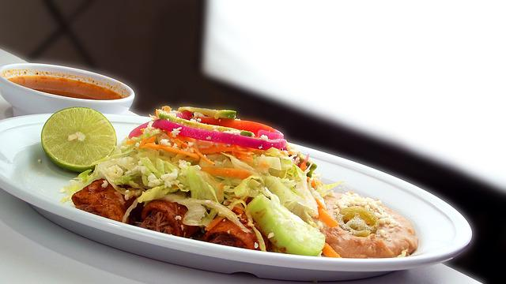

Customize with your favorite fillings.
In a saucepan over medium-low heat, combine the canola oil and flour. Whisk together and allow to bubble for 1 minute. Pour in the red sauce, chicken broth, salt and pepper. Bring to a boil. Reduce the heat and simmer while you prepare the other ingredients.
While the sauce is simmering, brown the ground beef with the onions in a large skillet over medium-high heat. Drain the fat, add the salt and stir to combine. Turn off the heat and set aside.
In a small skillet over medium heat, heat some canola oil. Lightly fry the tortillas just until soft. Do not crisp. Drain on a paper towel-lined plate. Repeat until all the tortillas have been fried.
Preheat the oven to 350 degrees F.
Spread 1/2 cup of the sauce in the bottom of a 9- by 13-inch baking dish. Next, one at a time, dip each tortilla into the sauce. Set the sauce-soaked tortilla on a plate. Place on some of the meat mixture, chilies, green onions and black olives. Top with a generous portion of grated Cheddar. Roll up the tortilla to contain the filling inside.
Place the tortilla seam side down in the baking dish. Repeat with the rest of the tortillas and pour the remaining sauce over the top. End with a generous sprinkling of cheese and any other bits of chiles, green onions or olives you have left over from the filling.
Bake the enchiladas for 20 minutes, or until bubbly. Sprinkle chopped cilantro over the top and serve.